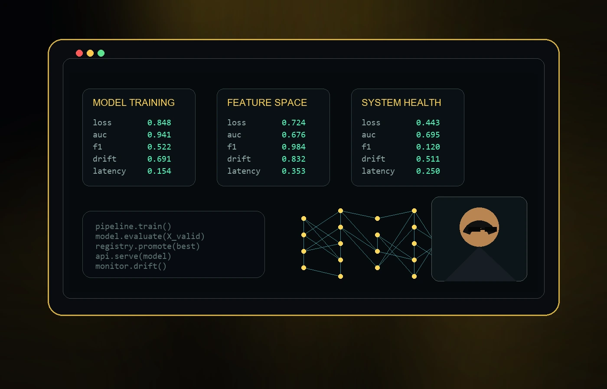
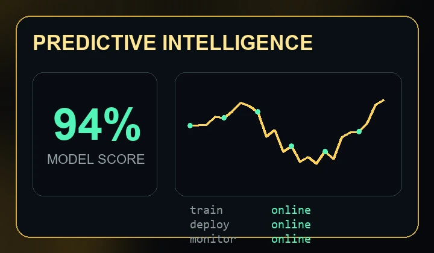
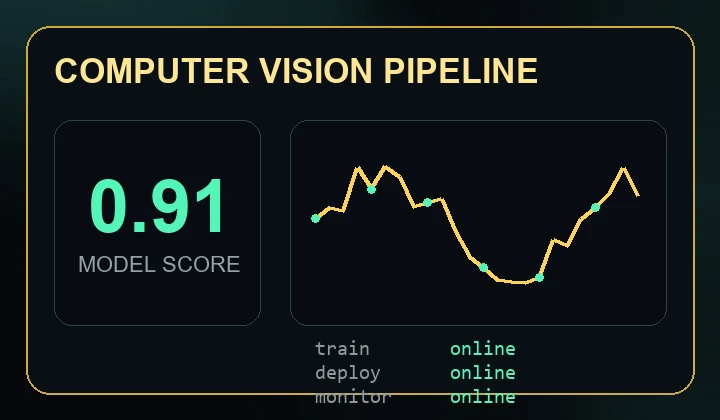
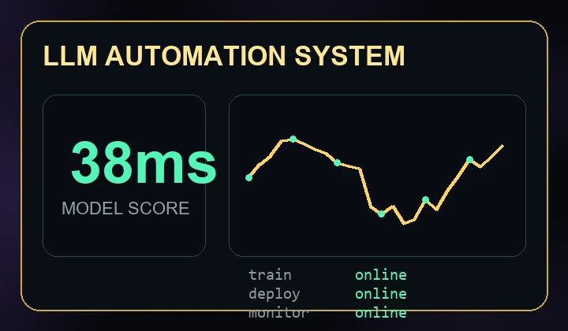

Machine Learning
Supervised learning, classification, regression, feature engineering, model evaluation, cross-validation.
The Portfolio

I am a Machine Learning Engineer focused on turning messy datasets, experiments, and model ideas into reliable products. This portfolio is ready for your real projects, case studies, demos, and links when you send them.
Training, evaluating, deploying, monitoring, and improving models with a product mindset.
Supervised learning, classification, regression, feature engineering, model evaluation, cross-validation.
Neural networks, PyTorch, TensorFlow/Keras, transfer learning, embeddings, optimization.
Prompt engineering, RAG, vector search, agents, workflow automation, AI-assisted applications.
APIs, Docker, model serving, CI/CD, monitoring, experiment tracking, cloud deployment.
Python, SQL, ETL pipelines, data cleaning, Pandas, NumPy, Spark basics, database design.
Dashboards, metrics, A/B thinking, Matplotlib, Plotly, Tableau/Power BI-style reporting.

A production-style ML case study slot for forecasting, scoring, churn prediction, risk modeling, or recommendation systems.
Live Project
A polished slot for detection, classification, image search, quality inspection, OCR, or visual analytics work.
Live Project
A portfolio-ready slot for RAG assistants, AI agents, document intelligence, chatbots, and workflow automation.
Live ProjectLet's build something intelligent.